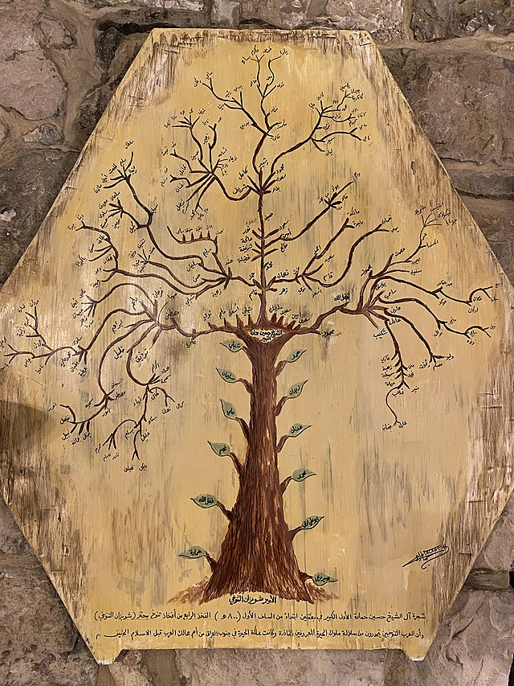

Hercules had a complicated family tree. According to legend, his father was Zeus, ruler of all the gods on Mount Olympus and all the mortals on earth, and his mother was Alcmene, the granddaughter of the hero Perseus. (Perseus, who was also said to be one of Zeus’ sons, famously beheaded the snake-haired Gorgon Medusa.)
Who is Zeus? Zeus is the god of the sky in ancient Greek mythology. As the chief Greek deity, Zeus is considered the ruler, protector, and father of all gods and humans. Zeus is often depicted as an older man with a beard and is represented by symbols such as the lightning bolt and the eagle.
Alcmene, in Greek mythology, a mortal princess, the granddaughter of Perseus and Andromeda. She was the mother of Heracles by Zeus, who disguised himself as her husband Amphitryon and seduced her.
